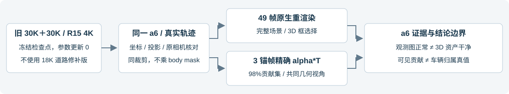
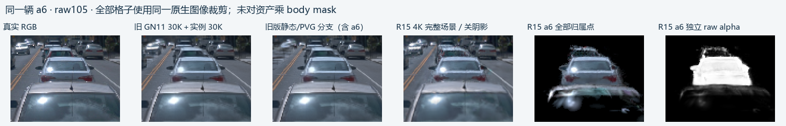
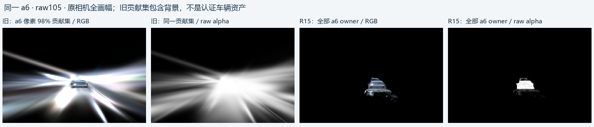
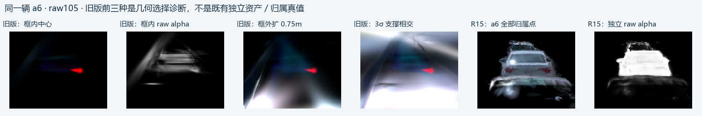
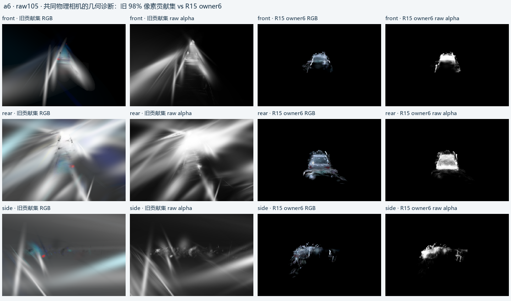

2026-10-18 · WS-V82-R15-OLD30K-A6-20261018 · 同一 track：7MxwK9zTRZ9g5lc_ZC0z6A · 未使用 subagent
a6：旧版观测画面更正常，但旧版的对应 3D 表示也有大尺度外溢与几何纠缠
结论分两层：旧 GN11 30K＋实例 30K 的 a6，在原观察视角中比 R15 4K 更自然；但它由旧静态/PVG 分支表达，未形成独立 a6 资产。直接检查同一 a6 的几何与精确像素贡献后，旧版也暴露出长条、片状和大尺度高斯支撑。
不能把 R15 车底外延全部认定为本轮新引入；也不能据此宣称旧版已经有同一批、同样归属的车底碎片。R15 从原测量重训，没有继承旧版这些已训练高斯。当前归属资产的碎片问题仍未解决。

先看同一辆 a6：49 帧、同裁剪
直接加载旧最终实例 step=30000 检查点；其背景来自 GN11 step=30000。重新渲染的 49/49 原生完整 RGB 与原报告旧基线逐像素一致。没有混用后续 18K 道路修补版，也没有重训。R15 以保留的 step=4000 冻结模型关阴影渲染，便于看清几何和外观。

左到右：真实 RGB、旧完整场景、旧静态/PVG、R15完整场景、R15全部owner6、R15独立alpha。当前模型的整块下部外延在独立资产中可见，但在完整场景里部分被前车遮挡。旧画面正常不能单独证明旧几何可分离。
旧版 a6 的可见车身，主要由框外中心的高斯共同画出
在固定 raw105／113／137，保持当前 a6 真实可见 body mask 不变，通过原联合渲染的 feature 梯度计算每个高斯的精确 alpha×透射率 贡献；旧版这三个 a6 车身区域的贡献均来自静态/PVG，而非旧版的三个独立实例。没有按颜色或高度删点。
| raw | a6车身像素 | 贡献来自框外中心 | 来自外扩0.75m框外中心 | 来自最大主轴σ>1m的高斯 | 98%贡献集点数 | 贡献集主轴σ的P95 |
|---|
| 105 | 1210 | 92.12% | 84.35% | 15.63% | 2136 | 3.00 m |
| 113 | 1054 | 93.38% | 89.72% | 14.92% | 1816 | 3.24 m |
| 137 | 419 | 92.45% | 91.16% | 15.10% | 698 | 3.49 m |
因此，旧版 a6 的正常车形并不对应一个局部、干净的 3D 车辆表示。把覆盖其98%静态可见贡献的高斯独立渲染，会出现明显大范围射线状／片状外溢。这支持旧版已存在非局部几何解释和提取纠缠；它不把这些高斯自动判成 a6 或道路。真实背景也会贡献这些像素，贡献集不是归属真值。
贡献审计和共同几何视角仅有raw105、113、137三个固定锚帧；滑动时这两图显示最近锚帧，图内标注实际raw编号。
贡献审计和共同几何视角仅有raw105、113、137三个固定锚帧；滑动时这两图显示最近锚帧，图内标注实际raw编号。

此图保持原相机全画幅。旧集合按原完整场景的贡献选择；独立渲染改变遮挡关系，亮度和外延不能直接作为误归属像素计数。
几何选择边界检查
对旧版同一 a6 分别取：高斯中心在真实3D框内、框每面外扩0.75m、3σ轴向包围范围与框相交。框半尺寸采用R15由实测框建立的固定a6尺寸（2.167、1.039、0.720米），逐帧中心与朝向使用真实轨迹。框半尺寸采用R15由实测框建立的固定a6尺寸（2.167、1.039、0.720米），逐帧中心与朝向使用真实轨迹。完整保留选中高斯的形状及不透明度，不裁车底，不乘 body mask。三种入口结果差异很大；严格框内集合并不能还原完整车辆。这是提取诊断，没有创建或修复旧版 a6 归属。

相机中心对齐最大误差 4.5e-07m；三锚帧a6中心投影差约0.125像素。坐标映射使用原数据的世界归一化与原始轨迹，没有靠手动拖动对齐。
共同物理相机的三个几何视角
下面始终是同一 a6 的前、后、侧视角；旧版显示覆盖98%可见贡献的集合，R15显示全部owner6。两者使用同一物理相机和光栅入口。旧集合包含真实背景；不能把两栏当作已经具备相同归属语义的车辆资产打分。

这些视角用于检查高斯支撑与alpha。旧版颜色固定为原观察方向的SH值，不能据此评判完整新视角外观或光照；几何和alpha没有该颜色冻结限制。
这次核对能回答什么
旧版也不是干净几何基线：a6在观测视图中的好效果掩盖了非局部高斯依赖，分离后已有严重外溢／拉伸。因此“新图里见到碎片，所以这种几何问题一定是R15新增”缺少依据。
R15仍需要解决独立a6资产的车底外延：旧版没有独立a6归属，无法做完全同语义的owner资产对比，也无法证明两版存在相同道路碎片。当前高斯归属修改仍须使用可靠的3D与可见性证据。发现旧版的局限，不构成R15质量通过。
本轮只读重渲染和贡献审计，训练更新0；全部原检查点保留。3个锚帧是固定坏例诊断，49帧是同窗口重建视角，没有未见测试或编辑后配对真值。
证据与资源
检查点与49帧原生一致性 · 同一a6的49帧3D入口 · 三锚帧精确贡献 · 结论JSON · 关机前检查 · 关机记录 · 贡献审计代码
代码和数值结果已推送GitHub v82；AutoDL于16:04（新加坡时间）执行关机，随后SSH连接关闭。本地保存完整原始导出，远端保留全部PNG、逐点NPZ及原检查点。未检查云控制台计费状态。
failure_ledger_refs：V82-F06；failure_ledger_delta：none；human_verdict=null；problem_solved=null。